待使用者確認風格 · user_style_approval: pending
曦光法師（mage）正式模型 · 2026-10-16
原創生成：codex 內建生圖產生正／背參考圖 → TripoSR 身體與正背投影貼圖 → 沿用牧師同款 20 骨架與 LOD 規格，程式建模的赤手閉握手與 1.98 m 曦光杖（鏤空金色日輪與光芒）。沒有沿用任何既有兵種的幾何。目錄 preview: true 仍保留，正式對局看不到；你確認風格後才會移除旗標並加入 REQUIRED_MODELS。
生成參考圖（來源）
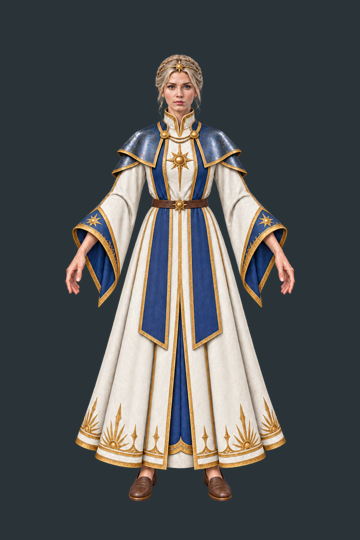
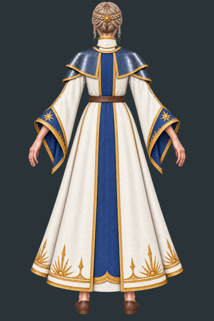
旋轉檢視 · 近景 LOD0
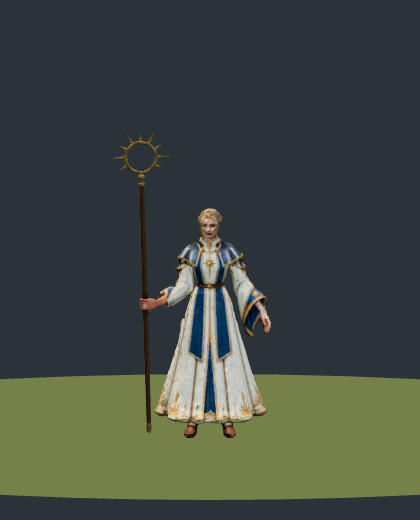
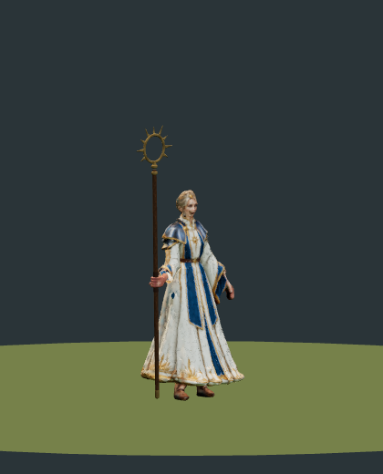
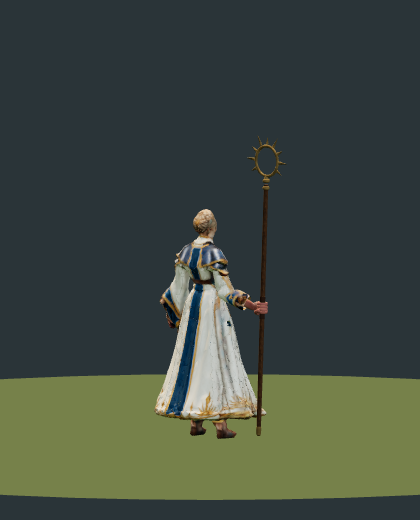
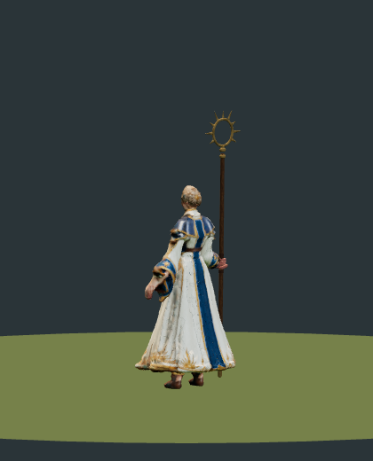
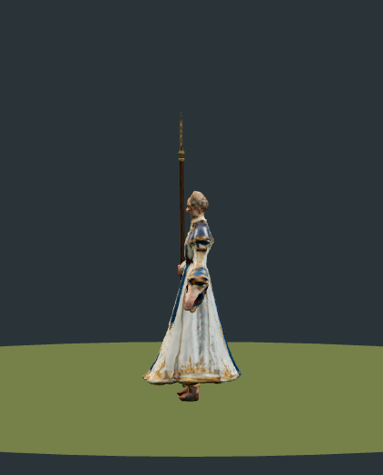
旋轉檢視 · 遠景 LOD1
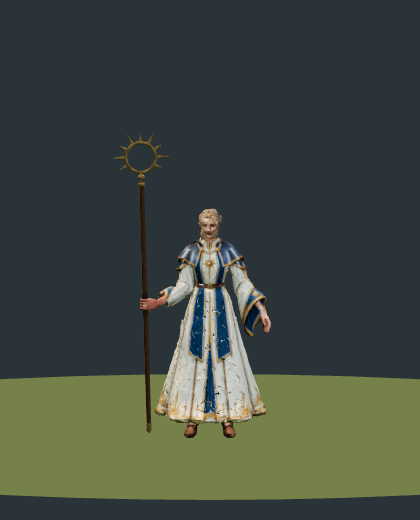
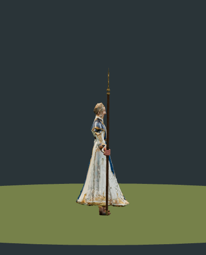
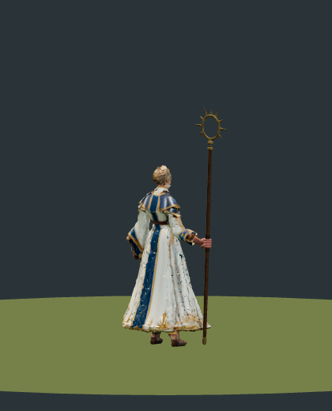
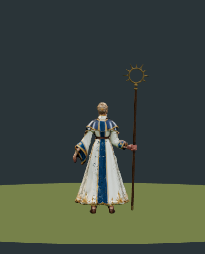
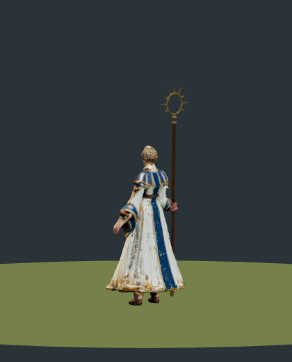
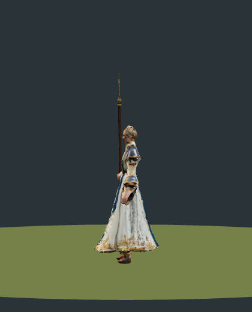
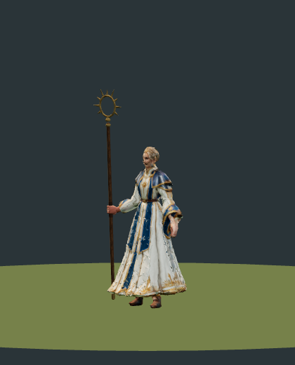
隊色（遊戲內 runtime 著色）
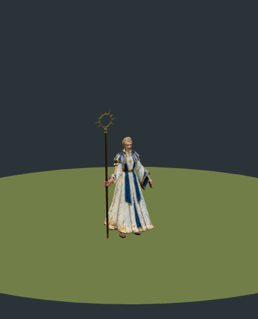
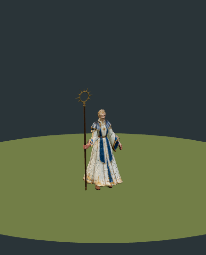
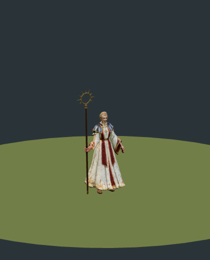
與 priest, guard 同比例並排
身高（runtime 綁定姿勢包圍盒）：priest 1.99 m、mage 1.74 m、guard 1.95 m；法師身高 1.74 m，曦光杖頂端約 2.2 m，高過牧師。
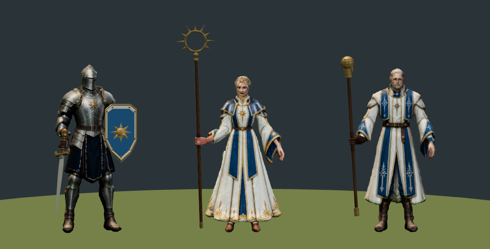
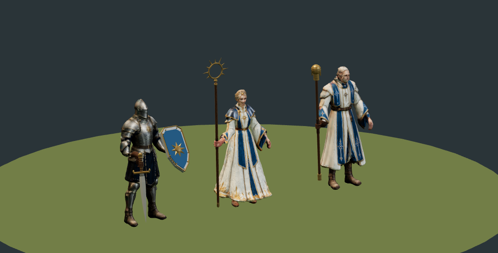
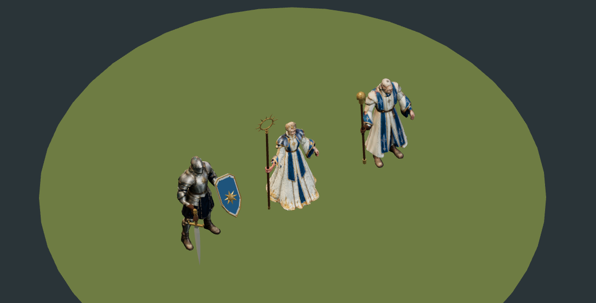
動作（每段 8 幀，同段共用比例）
Idle · 2.400 s
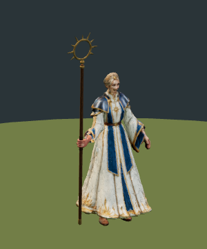
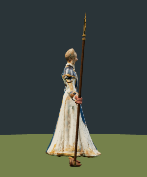
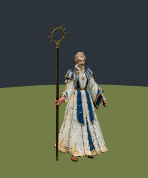
Walk · 0.733 s
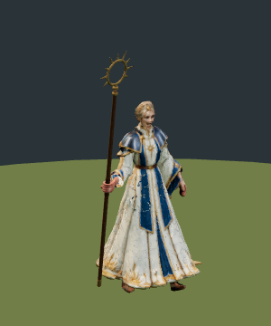
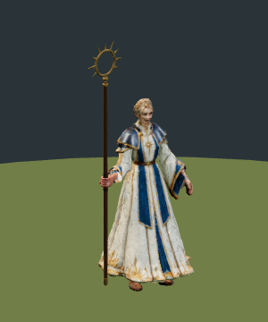
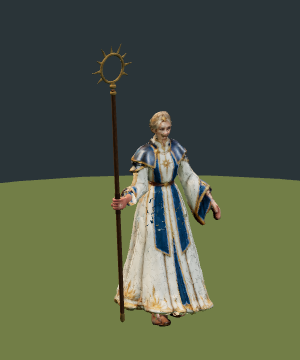
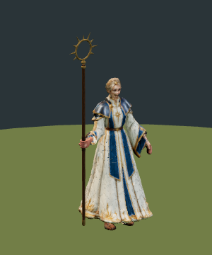
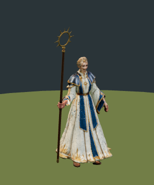
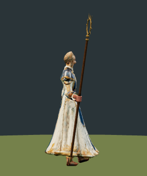
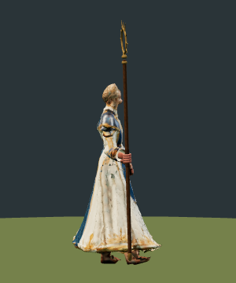
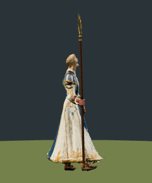
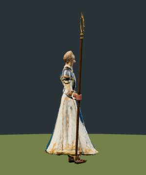
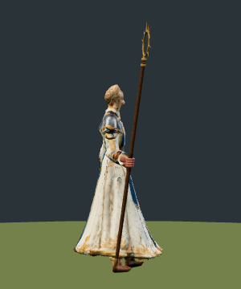
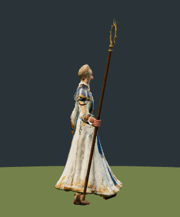
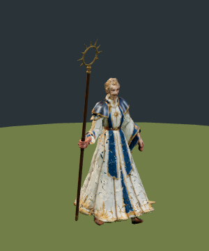
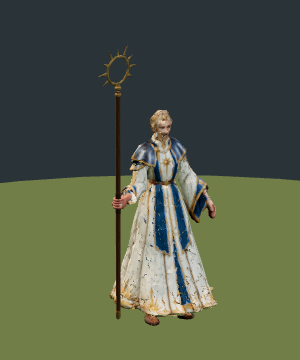
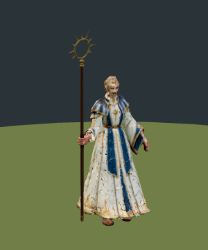
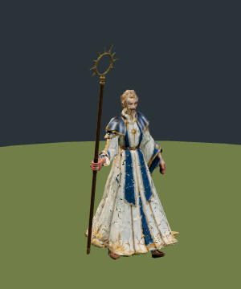
Attack · 1.000 s；杖擊出光彈的命中幀 13（0.433 s）
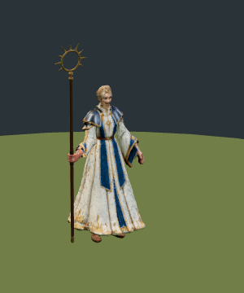
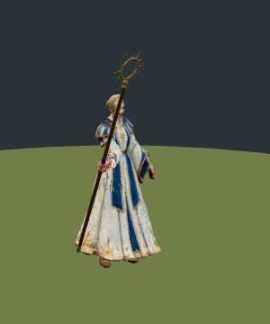
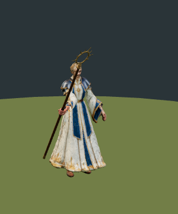
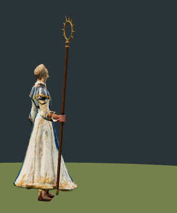
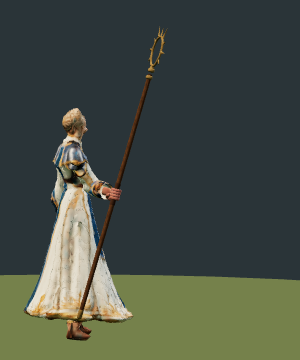
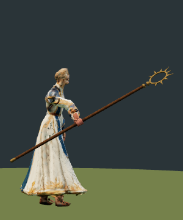
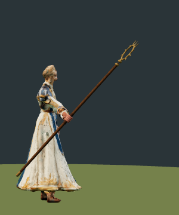
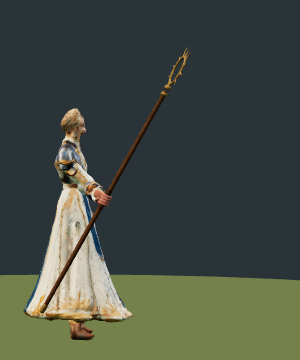
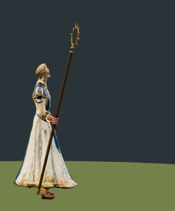
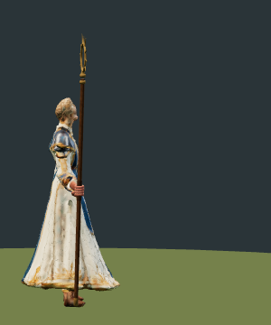
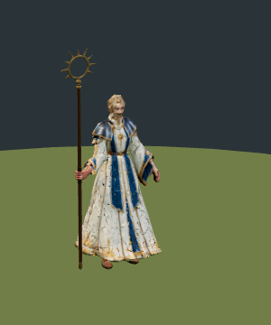
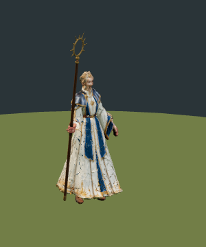
CastBlast · 0.600 s
Hurt · 0.500 s
Death · 1.600 s；膝蓋一軟，長袍在地面攤開，伏身倚著立在身前的法杖


手部近景（待機與攻擊幀，runtime 著色）
閉握手（roster_hands.py）：實心手掌貼住握柄、四根相鄰的三節手指（指節隆起、關節與指腹收腰、圓指尖）繞握約 250° 收回掌根、拇指橫壓食指與中指，手掌整塊綁 Hand 骨；手腕彎曲只發生在護腕段；手臂 IK 讓前臂延續手掌方向（直腕）。近景只裁掉手前方 10 cm 以外的物件（正交視角下遠處槍頭／布條不會疊在手上，被裁切的桿身會露出斷面）。握距與包覆數值見下方機械驗收。
訓練圖示（待確認）

圖示機械檢查：通過，邊距 [9, 13, 9, 13]，12728 bytes。預覽兵種的訓練鈕仍為純文字，多選清單縮圖會用到此檔。
機械驗收
| 項目 | 結果 |
|---|---|
| Khronos glTF validator（正式檔） | 0 errors，6 warnings（URI_GLB、NODE_SKINNED_MESH_NON_ROOT，與既有模型同類） |
| 完整性（動作、20 骨架、權重、LOD 共用骨架、rtsMotion、遮罩、預算、地面） | passed；最低點 -4.0 mm，待機離地 ≤ 8.4 mm |
| 閉握手接觸（31 取樣／段／LOD） | 372 次檢查 0 失敗；握距 -3.3～-1.5 mm（門檻 -6～+8），包覆 ≥ 15/16 |
| Three AnimationMixer 法杖／身體穿插 | 372 次檢查，最大穿插 0 |
| 60 Hz 動畫包圍球 | 6 節點 0 超出，最小餘裕 114 mm |
| 雙手 IK 殘差（各段最大） | {"Idle": 0.0, "Walk": 0.0, "Attack": 0.0, "CastBlast": 0.0, "Hurt": 0.0, "Death": 0.0} |
檔案大小與面數
| 曦光法師 | 衛兵（參考） | |
|---|---|---|
| LOD0 GLB | 1,288 KB · 18,678 三角 | 1,434 KB |
| LOD1 GLB | 905 KB · 9,900 三角 | 1,057 KB |
| 共用身體貼圖（兩個 LOD 共用一份） | 569 KB | 內嵌於 GLB |
已知限制
- 施法動作命名為
CastBlast：遊戲對曦光術播放 cast＋blast，名稱需相符才不會退回 Attack。 - 持杖的右袖收窄（像束起的袖口），否則喇叭袖在抬臂時會與杖身穿插；左袖保留寬大喇叭袖。曦光術為雙手上舉：右手把杖高舉過頭、左手掌心朝上，再一起向前壓下放出。
- 法師赤手，閉握的右手用膚色材質；張開的左手是原始重建手。
- 長袍下襬跟隨地面（Root）多於骨盆，所以倒下時是跪坐、袍子攤在地上，而不是整件裙擺像硬殼般翻倒。
- 長袍側面改用放寬角度的投影（roster_projection_relaxed.py），比原始投影少了鏽色污斑；藍色隊色遮罩在白袍上仍有零星小點。
- 身體來自單張參考圖重建：嘴唇深色加上臉頰一道重建摺痕，近看臉部有暗色投影污痕（試過放寬投影與重生參考圖都無改善，紀錄在 run 的 rejected/）；遊戲距離與 48px 圖示看不出。
- 選取肖像框位（
PORTRAIT_FRAMING）要等正式上線時一起加入。
來源與重現：art-factory/rts/tools/roster_mage_build.py、roster_pack.py、roster_publish.py；registry：public/assets/games/rts/model-registry.json、art-factory/rts/manifests/unit-registry.json。